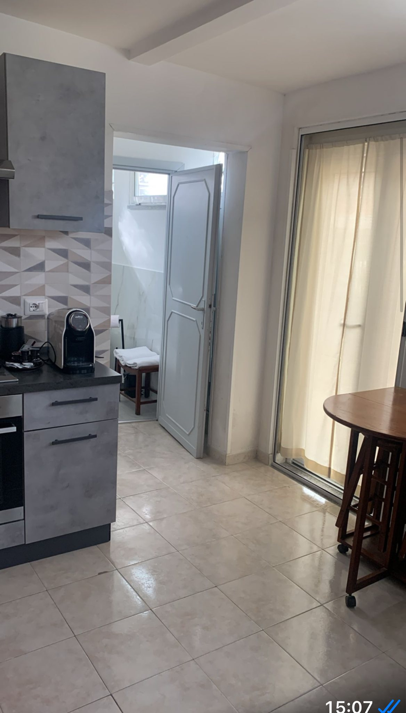
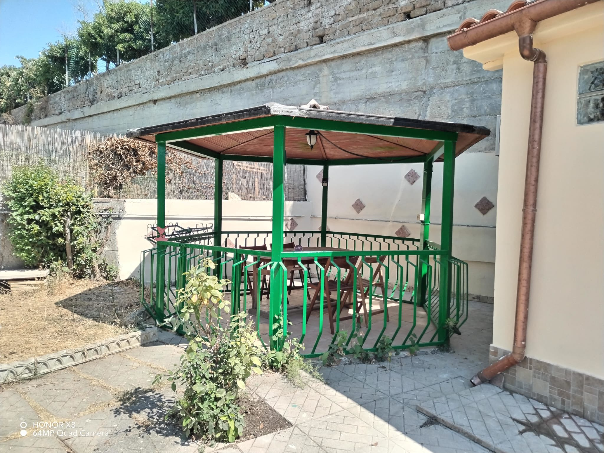

Welcome to Our Holiday Apartment
Located just a few minutes from the center of Florence, our apartment offers comfort, peace and the perfect base to explore the city.
Guest Reviews
"Clean and well-equipped apartment, very helpful host. Highly recommended!" – John, London
"Great location and the outdoor gazebo is perfect for summer evenings!" – Emily, Dublin
Gallery

